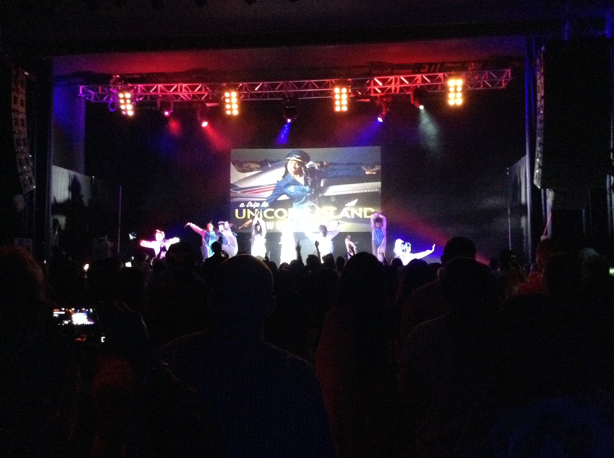

My Trip To Unicorn Island
Published: 25th June, 2015
The afternoon of Sunday 14th June was the moment where it all began, the moment I made a spontaneous decision to book tickets to go see Lilly Singh’s tour titled ‘A Trip To Unicorn Island’.
Fast forward to the morning of Sunday 21st of June (the day of the show) I was all packed and ready to leave the house to catch my train to Birmingham but my excitement was about to take a little turn for the worst... Yes, I got on the wrong train that was heading to London! After a quick phone call to my Mum and Kimberly, I got off at the next stop and finally got to Birmingham about 2 hours later than scheduled. Thankfully I didn't have to purchase any more train tickets which was a relief since they're so expensive. However, it didn’t get any better once in Birmingham as I kept going round in circles trying to find Premier Inn. In the end, I had to get a taxi to drive me.
Once at Premier Inn things started to look up. The staff were extremely friendly and welcoming, the room was a good size (although too warm for me), the bed was comfy and the food was gorgeous.
After I’d eaten and got changed it was nearly show time. As I was walking up to the O2 I was paused in my tracks by the rather long queue. After what felt like years, I was finally inside at my seat waiting for the show to start. The show started with a roar as Lilly Singh stepped on stage! The show consisted of comedy, singing, dancing and a motivational speech about overcoming depression and finding happiness.

After the show finished I went back to the hotel and tried to get some sleep. I say tired as I must have been too excited to sleep! The next morning I woke up very tired but after a delicious breakfast I packed my things back up and went back home on the right train this time!
I really enjoyed the show and I am glad that I decided to go. All in all, after the worst morning I could have wished for the night turned out to be the best night of my life so far.
Lilly Singh, better known by her YouTube username Superwoman, is a Canadian YouTube personality, vlogger, and comedian.